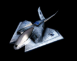

Lancer
From Achron Wiki
| Lancer | |
|---|---|
| | |
|  | |
| Unit | |
| Faction: | Human (CESO) |
| Role: | Rapid deployment gunship |
| Sight range: | 26 |
| Footprint: | Air, Square, 3x3 |
| Chronoportation Cost: | 44 |
| Build | |
| Cost: | 18 |
| Build from: | Factory |
| Build time: | 28s |
| Build hotkey: | L |
| Offence | |
| Attack strength: | Antimatter Missiles:
Plasma Gun:
|
| Attack frequency: | 1/2.61s vs. ground 1/1.88s vs. air With Aerospace:
|
| Avg. damag./s. | 6.7/s vs. ground 8/s vs. air With Aerospace: |
| Attack range: | 16 vs. all |
| Splash damage: | 3 vs. all Plasma Gun:
|
| Damage Modifiers: | 10.6/s to Teth Halcyon with Aerospace: |
| Defence | |
| Health: | 125 |
| Damage taken: | 22.3/s(from 24/s) from upgraded Defense Turret |
| Movement: | Very Fast, 9 sq/sec |
| Ability | |
| Abilities: | Break TSS: 100 |
| Energy: | 100 |
| Energy recharge: | 1 every 2.5 seconds |
{kind=link}
{kind=link}
{kind=link}
The Lancer is a lightweight aerospace vehicle built from the Factory. It has the ability to Break TSS. It is strongest against air units until Aerospace is upgraded.